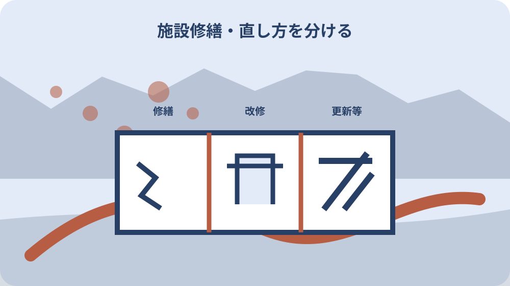
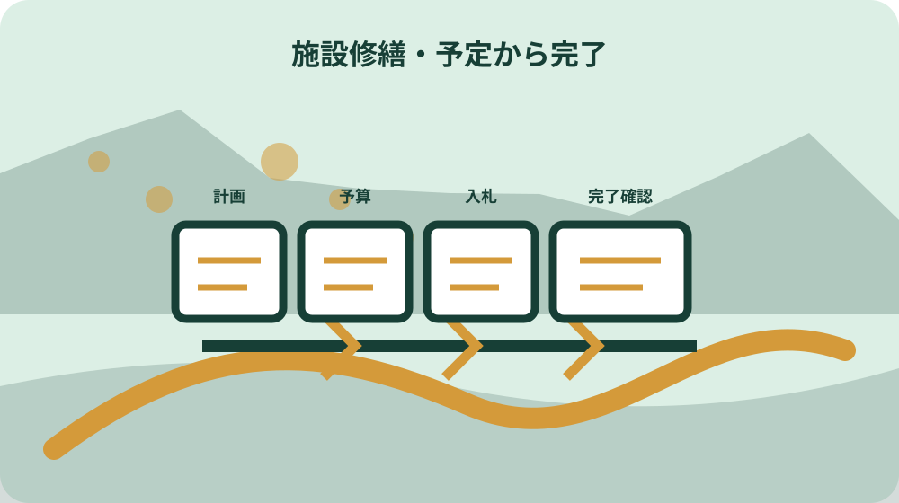

先に結論を確認する
この記事の答え：施設の正式名称、対象年度、維持管理・修繕／改修／更新等の区分、計画・予算・入札・完了の証拠段階、資料名、PDF版表示、ページ更新日、取得日を一行にします。計画へ掲載されたことだけで工事完了とは記録しません。
森町で最初に照合する条件：施設名は主要施設一覧の通称だけで決めず、計画PDF、予算説明書、入札結果に記載された名称をそれぞれ原文のまま残す。
修繕資料索引は施設名・年度・区分・証拠段階・出典で作る
森町の公共施設がいつ直されたかを調べるとき、最初に作るのは年表ではなく索引です。一行に施設の正式名称、対象年度、工事の区分、証拠段階、出典を置きます。分からない欄は空白にせず、未確認と次の確認先を記します。
この記事でいう証拠段階は、計画、予算、入札・契約、完了の四つです。計画PDFに将来年度の記載があっても、工事済みとは限りません。逆に小さな修繕は個別施設計画の表へ目立って載らず、予算や契約資料から見つかる場合があります。
索引の答えは『この施設は改修済み』という早い結論ではありません。どの資料で、どの時点まで確認できたかを示すことです。例えば『個別施設計画で改修予定を確認、入札結果は未確認』なら、家族も次に探す資料を同じ位置からたどれます。確認者名も添えれば、後日の質問先を迷いません。
森町の公式資料は、町全体の方向を示す総合管理計画、施設別の方向を示す個別施設計画、年度別予算、入札結果に分かれています。これらを一冊の履歴と見なさず、資料ごとの役割を保ったまま同じ施設名へ結び付けます。
同じ施設を追うため正式名称と類型を先に固定する
最初の列は施設名です。通称だけで検索すると、文化会館、図書館、総合センター、体育施設などの記載が別資料で揺れます。索引には資料に記された名称を写し、普段の呼び方は別名欄へ置きます。別名から正式名称を推定して上書きしません。
2019年の個別施設計画は、学校、子育て、医療、公営住宅、文化、行政、福祉、レクリエーション、公園などの類型を示し、一覧は2018年9月末現在で116施設、延床面積85,838平方メートルです。この基準日を施設名の横に添えます。
2022年改訂の総合管理計画は、2021年3月末時点等を基準に127施設を扱います。施設数が違うことだけで、どちらかを誤りとしません。基準時点、対象範囲、学校や上下水道などの扱いが異なるため、索引では資料名と基準日を対にします。
一つの敷地に複数の建物や機能がある場合も、無理に一行へまとめません。施設名、棟名、機能名のどこまで資料が特定しているかを残します。名称が一致しないときは、所在地や所管を補助列に置き、同一施設かどうかを担当部署へ確認します。住所が同じでも別棟なら別の対象として保留します。
計画・予算・入札・完了を四つの証拠段階に分ける
第一段階の計画は、将来の方向や費用見込みを示します。第二段階の予算は、その年度に支出できる枠や事業説明を示します。どちらも重要ですが、着工や完了そのものの証明ではありません。索引の証拠段階を一段進めすぎないことが基本です。
第三段階は入札・契約です。工事名、執行日、落札結果などから、対象施設と業務が具体化したことを確認します。ただし契約後に内容や工期が変わる可能性もあるため、入札結果を完了欄へ転記しません。契約を確認した日として別に残します。落札額も最終支出額とは限らないため、金額欄には資料種別を添えます。
第四段階の完了は、完成検査、供用再開、町の広報、議会資料など、終わったことを明示する資料で確認します。外観が新しく見える、工事車両がいなくなったという観察だけでは公的な完了日にしません。現地写真は観察記録として別列に置きます。
この四段階にすると、資料が見つからないことも情報になります。計画はあるが予算以後がない、入札結果はあるが完了資料がない、と状態を表せます。『資料なし』ではなく、検索したページ、対象年度、確認日、次に尋ねる窓口を記録します。
個別施設計画から将来の方向性だけを拾う
森町公共施設個別施設計画は2019年3月に作られ、計画期間を2045年度までとしています。公式ページは、施設ごとの方向性と実施事項を定め、修繕や更新を計画的に進めて費用を分散する資料だと説明します。履歴ではなく出発点です。
索引へは、対象施設、類型、方向性、実行計画上の年度、費用区分を写します。表の年に工事が完了したとは書かず、『計画上の年度』と明示します。PDFのページ番号と表題も残すと、改訂版が出たときに同じ箇所を比較できます。
計画は点検や維持管理の状況により適宜更新するとしています。したがって、古いPDFにある方向が現在も同じだと断定できません。町ページの更新日、PDF表紙の策定年月、取得日を三つに分け、後の資料が優先されるかを確認します。更新予定が書かれていても、現行版の所在は町へ再確認します。
総延床面積を2045年までに25パーセント減らし、64,000平方メートル以下とする目標も、個別工事の完了記録ではありません。施設の統合、複合化、譲渡、解体を含む町全体の前提として読み、特定施設の結論へ直接置き換えないようにします。
修繕・改修・更新等の区分を原資料の定義で残す
個別施設計画は、劣化した部位や設備を当初の状態まで戻すことを修繕としています。亀裂の補修や消耗品の取替えのように、実施後の効用が当初を上回らない作業です。索引では日常の『直した』という言葉をそのまま工事区分にしません。
改修は、直した後の効用が当初の水準を上回るものとされ、耐震改修や長寿命化改修が例示されています。更新等は、老朽化で機能が低下した施設を取り替え、同程度の機能へ再整備することで、除却も含みます。三つを別の選択肢にします。
工事名に修繕という語があっても、計画上の分類と一致するとは限りません。索引には『資料記載の工事名』と『計画上の区分』を別列で残します。自分で分類した場合は判定者と日付を記し、町が公表した分類のように見せません。
区分を分ける利点は金額比較より、意味の違いを家族へ伝えられることです。屋根の一部補修と建物全体の長寿命化工事を同じ履歴一件にすると、次の点検時期や利用への影響を読み違えます。部位、範囲、機能変化も分かる範囲で添えます。設備だけの工事なら建物本体と別行にします。

評価値は基準年と算定範囲を付けて読む
個別施設計画の基礎評価は、老朽度、修繕率、利用度、コストの四項目です。評価の高低だけを抜き出すと、現在の施設状態を表す点数に見えてしまいます。索引では評価項目と同時に、どの年度のデータかを必ず記録します。
修繕率は2015年度から2017年度までの修繕費と、当時必要とされた修繕額を合計し、取得価額で除した値です。2026年時点の修繕状況ではありません。数値を引用するときは『計画策定時評価』と付け、現在値のように表示しません。
建物劣化度調査にも対象条件があります。総延床面積100平方メートル以上で日常的に利用され、主要な建物が2018年3月末時点で築20年以上という条件です。対象外だった施設を『劣化なし』と読まず、調査対象外と記録します。
評価は修繕履歴を探す入口として使います。修繕率が高い施設なら該当期間の予算や工事名を探し、利用度が低い施設なら統合や用途変更の資料も確認します。評価結果だけで安全性や今後の存続を断定しないことが大切です。評価欄には引用ページを付け、転記ミスも再点検します。
総合管理計画は町全体の背景と改訂版を確認する
森町公共施設等総合管理計画は2016年3月に作られ、総務省の指針改訂を受けて2022年3月に改訂されています。索引の上位資料欄には改訂版を置き、古い計画の数値を使う場合は旧版であることを明記します。
改訂版は2030年度末に公共施設全体の約90パーセントが築30年以上になる見通しを示しています。これは個々の建物が危険という判定ではなく、維持・更新費が増える町全体の背景です。特定施設の状態は個別資料と現況へ戻ります。
同計画は過去の実績として、2020年4月の泉陽中学校の森中学校への統合と、2021年4月の三倉小学校・天方小学校の森小学校への統合を記載しています。計画内でも将来方針と過去実績が混在するため、見出しを確認して抜き出します。
普通会計の公共施設建物の更新等費用は、2021年度から2030年度まで約99億円、2045年度まで約195億円と見込まれています。この数字も特定施設の工事費ではありません。索引では町全体の見込み欄に置き、個別費用へ配分しません。端数から一施設の金額を逆算することも避けます。
予算書と入札結果で実施へ近づいた証拠を探す
計画で対象年度を見つけたら、森町の当初予算ページへ進みます。同ページには一般会計の予算書、説明書、概要が年度別に並び、令和8年度から平成30年度までを参照できます。索引には該当年度の資料名と掲載ページを残します。
予算の事業名が施設名と一致しない場合があります。所管、事業目的、工事箇所、説明文を照合し、似た語だけで同じ工事と決めません。補正予算で追加や変更が行われる場合もあるため、当初予算だけで年度全体を確定しないようにします。予算書と説明書でページが違う場合は両方を記録します。
令和2年度入札結果ページは、建設工事、測量・建設コンサルタント等、物品製造等を分け、執行日付きPDFを公開しています。工事は建設工事、調査設計は測量等、設備購入は物品というように、目的に合う区分を順に探します。
同ページは2020年12月から建設工事と測量等の電子入札を始め、その後の公表先を静岡県共同利用電子入札システムとしています。森町ページで結果が途切れても未実施とは限りません。公表先が変わった日を索引に入れます。

ページ更新日・PDF版・取得日を一組で記録する
ウェブページの更新日、PDF表紙の策定・改訂年月、読者が取得した日は別の情報です。総合管理計画ページは2024年8月更新でも、掲載PDFは2022年3月改訂版です。索引には三つの列を作り、最新という一語へまとめません。
個別施設計画ページは2019年9月更新で、PDF表紙は2019年3月です。ページが後に更新されてもPDF本文が差し替わっていない場合があります。ファイル名、容量、表紙表示、取得日を残すと、後日の差し替えを比較しやすくなります。
URLだけを家族へ渡すと、リンク先が更新されたときに当時読んだ内容が分からなくなります。索引には資料の正式題名と該当ページ、確認した記述の短い要約を添えます。保存の可否や取扱いはサイトの条件に従い、公開範囲を越えて転載しません。
資料が更新されたら旧行を消さず、新しい行を追加します。旧版、現行版、差分確認日を結べば、方向性の変化を追えます。数字だけを上書きすると、家族が過去の判断に使った根拠を再現できなくなるためです。差分がない場合も確認日を残せば点検履歴になります。
施設周辺の暮らしへの影響は工事完了と分けて考える
公共施設の改修は、利用休止、代替会場、通行動線、駐車場、災害時の役割に影響することがあります。ただし計画に改修とあるだけで、現在利用できないとは判断しません。利用案内と工事資料を別に確認し、利用条件は施設へ尋ねます。
住まいや店舗の検討で近隣施設を評価するときも、将来計画を完成済みの利便性へ加点しません。逆に統合や用途変更の方針だけで、直ちに廃止されるとも断定できません。確認できた証拠段階と現在の利用案内を並べて判断します。
地区の総合センターなどは、集会、防災、地域活動と複数の役割を持つ場合があります。建物の修繕区分とサービスの継続・移転は別軸です。索引には建物の方向と機能の方向を二列にし、片方からもう片方を推測しません。代替会場が示された場合も期間と対象行事を添えます。
現地で工事を見た場合は、撮影日、撮影位置、掲示された工事名を観察記録へ残せます。ただし立入禁止区域へ入らず、人や車両の個人情報を広めません。現地観察は公式資料を置き換える証明ではなく、次の問い合わせを具体化する補助です。
大石の視点：予定と完了を分ける索引が地域の判断を支える
ここまでの計画年月、施設数、評価方法、費用見込み、入札公表先は、森町と総務省の資料で確認できる公的事実です。ここから述べる一施設一行の索引と証拠段階の付け方は、私、大石浩之の実務提案であり、森町の公式見解ではありません。
私は、公共施設の将来方針を不動産の価値へすぐ結び付けるより、予定と完了を分ける方が安全だと考えます。『改修予定だから便利になる』『統合方針だから使えなくなる』と先回りせず、現在の利用と確認済み資料を同じ表で見ます。
小さな不動産業者の立場では、周辺施設の変化は道路、駐車、避難、家族の送迎に関わります。それでも査定額を先に動かす材料にはしません。施設名、工事範囲、利用休止、代替先、完了確認の順で事実を揃え、相談者へ未確認部分も示します。
索引は行政を評価する採点表ではなく、家族や地域が同じ資料を読み直すための道具です。工事費の大小だけで良し悪しを決めず、建物とサービスの役割、基準年、証拠段階を残すことで、次の確認を落ち着いて選べると考えます。分からない状態を隠さないことも記録の品質です。
一施設一行の索引を更新し次の確認先を決める
完成形は、施設名、別名、類型、対象年度、工事名、区分、証拠段階、資料名、ページ、版表示、ページ更新日、取得日、次の確認先を持つ表です。一つの施設に複数工事があれば年度と工事ごとに行を分けます。
最初の一行は、個別施設計画で関心のある施設を一つ選び、計画上の方向だけを転記します。次に同年度の当初予算と補正予算、入札結果を探します。完了資料が見つからなければ、完了欄を未確認とし、担当部署へ尋ねる質問を一文にします。
質問は『修繕しましたか』ではなく、『資料名と年度に記載されたこの工事について、契約日、工期、完了を確認できる公表資料はありますか』と具体化します。町が回答できる範囲を尊重し、公開されていない内部資料の提供を当然とは考えません。
索引を家族へ渡すときは、確認済み、計画上、未確認を色だけで区別せず文字でも表示します。年に一度、または新しい計画・予算が公開された時に取得日を更新します。予定を実績へ変えるのは、完了を直接示す資料を確認できた時だけです。更新担当と次回確認月も末尾に残し、家族への引継日も必ず記録します。